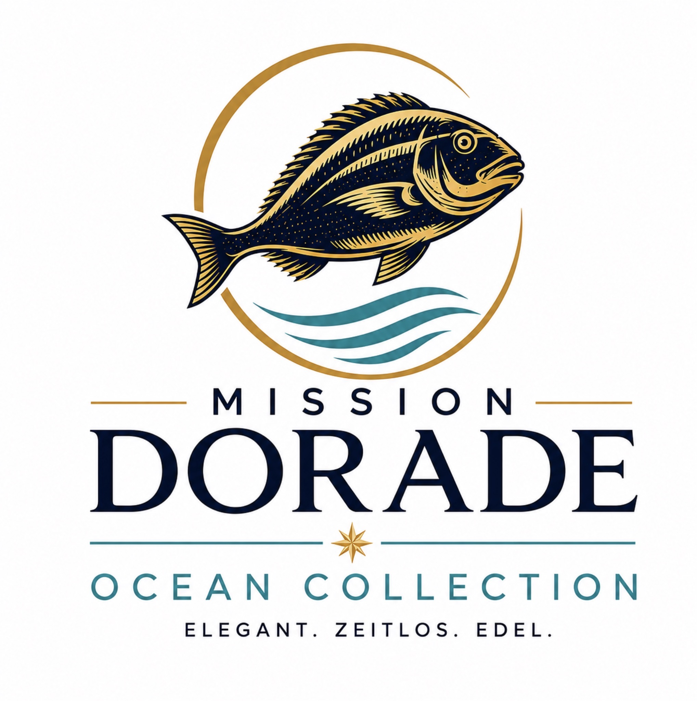

Stufe 1 · Der Beginn
Ocean Collection
Der Start von Annas Reise
2
eigene Club Partnerin Annas erster Ebene
Anna gewinnt ihre ersten beiden Club Partner selbst und begleitet sie beim Einstieg. Damit hat sie bewiesen, dass sie den ersten Schritt nicht nur verstanden, sondern praktisch umgesetzt hat.
Aufgabe: Zwei Menschen persönlich für die Mission begeistern, sauber einführen und aktiv begleiten.
Was Anna gelernt hat: Sie kann Vertrauen aufbauen, erklären und zwei Menschen sicher in ihre erste eigene Mission führen.
„Jeder große Ozean beginnt mit den ersten beiden Wellen.“